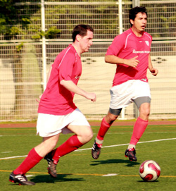

|
ASIJ, Saturday 1st May.

BFC put out their youngest side in many years with more under 30s playing than over 30s, but it was the over 30s who probably edged the battle of the BFC generations with an aging back line (average age closer to 40 than 30) keeping a deserved clean sheet and with Day and Himmer (we won't go there) both coming back from injury to show typical composure in their play.
To their credit Geckoes never lay down (do they ever?) and the game was still in the balance with 30 minutes left on the clock and BFC at 2-0 but with Geckoes still looking to force BFC onto the back foot. However, 17 year old roookie Jeff United keeper Bryan Yonanmine was always up to the task in BFC nets....a good keeper is worth 20 goals a season they say, Hitoshi from Hibs springs to mind.
The first goal had come from Shosuke - typical mazy run from just inside Geckoes' half ended in a calm finish with Geckoes' keeper failing to do what he had done 5 minutes before in almost identical circumstances. The second goal came from the head of Pabs 'second toughest in the infants' Pomares after some sustained BFC pressure - not a soft goal but Geckoes' defence should surely have dealt with it before it got to Pabs.
Before the game ran its course there was still time for 17 year old Hamish Denham to notch another goal taking his tally to 5 in 4 outings for BFC. With college football beckoning in the US he'll be missed together with keeper Yonamine. We'll just have to wait and see who Carlos brings on next season.
It wasn't really a great game with few incidents worth writing about other than the goals, which I've done....
Report by James Morson
|